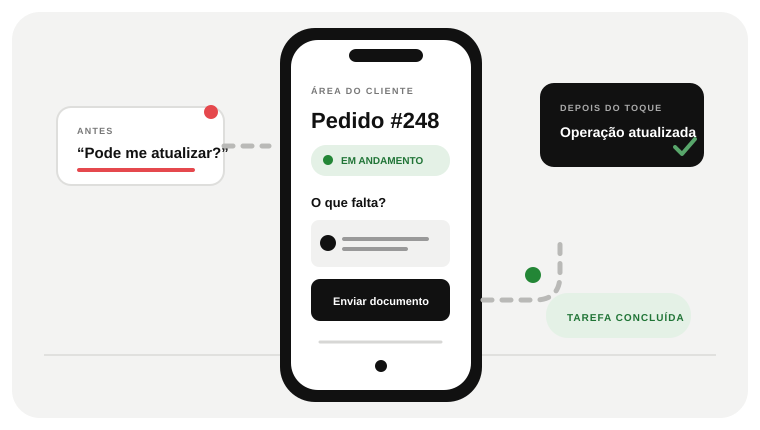

01 · O ACESSO
A tarefa começa onde a pessoa está.
Um fluxo móvel precisa funcionar no contexto real de quem solicita, consulta ou executa o trabalho.


 SITES · SOFTWARE · SISTEMASDescrever um projeto
SITES · SOFTWARE · SISTEMASDescrever um projetoQUANDO A TAREFA PRECISA SER RESOLVIDA NO CELULAR
Se cada dúvida no celular vira ligação para sua equipe, a tarefa não está resolvida. A Girofy projeta aplicativos empresariais partindo do uso real: o que a pessoa precisa fazer, quais dados entram e como a operação recebe o resultado.

A EXPERIÊNCIA TAMBÉM ACONTECE NO CELULAR
A tarefa precisa funcionar do primeiro toque ao resultado.
QUANDO A TAREFA PRECISA ACONTECER NO CELULAR
Do primeiro toque ao trabalho concluído, cada etapa deve manter contexto.
Um fluxo móvel precisa funcionar no contexto real de quem solicita, consulta ou executa o trabalho.
O caminho precisa deixar evidente o que preencher, o que consultar e o que acontece depois.
Status, notificações e histórico mantêm a pessoa informada sem obrigá-la a recomeçar a conversa.
Dados, permissões e integrações determinam como a experiência móvel se encaixa no processo existente.
Defina usuários, acessibilidade, conectividade e suporte antes de escolher o formato da solução.
APLICATIVO EMPRESARIAL · O PROBLEMA VISÍVEL
Quando alguém precisa acompanhar pedidos, enviar documentos, receber orientações ou trabalhar em campo, uma sequência de mensagens pode se tornar parte do problema.
Sem uma área para consultar status e arquivos, cada pergunta reabre a conversa e consome a atenção de quem atende.
Quem trabalha em campo precisa registrar informação onde ela nasce; deixar para preencher mais tarde cria lacunas.
No celular, navegação extensa e formulários genéricos tornam simples ações desnecessariamente difíceis.
O TRABALHO QUE PRECISA SER FEITO
Pode ser um aplicativo web responsivo ou uma aplicação instalada, conforme frequência de uso, integrações, acesso ao aparelho e necessidade offline.
Priorizar as tarefas que as pessoas abrem o app para concluir, com estados e retorno claros.
Texto legível, toque confortável, formulários curtos e respostas a falhas de conexão entram desde o desenho.
A conta, os dados, as permissões e as notificações precisam manter o mesmo contexto entre app e operação.
DECIDIR SEM APEGO À TECNOLOGIA
Quando a frequência, o contexto de uso ou os recursos do aparelho tornam um app melhor que um site responsivo ou um portal simples.
DO PROBLEMA A UM ESCOPO DECIDÍVEL
Mapeie contexto, dados, permissões e o que acontece quando a conexão falha antes de decidir quais telas realmente precisam existir.
Quem abre o aplicativo, em que lugar, com que conexão e para concluir qual tarefa?
Testamos a sequência no tamanho real do telefone, incluindo carregamento, erro e retorno.
Implementamos telas, dados, acesso e integração; validamos o caminho em dispositivos e cenários acordados.
PERGUNTAS DE QUEM ESTÁ AVALIANDO
Depende do uso. Um app web abre por link e funciona em navegador; um aplicativo instalado pode fazer sentido quando recursos do aparelho, notificações ou uso frequente são necessários.
A decisão vem do público, orçamento e recursos necessários. Uma experiência web responsiva cobre muitos usos; plataformas nativas exigem escopo e manutenção próprios.
É definido por usuário, função e tarefa. Armazenamento, autenticação, retenção e recuperação precisam entrar no projeto antes da implementação.
UMA CONVERSA COMEÇA COM UM CASO REAL